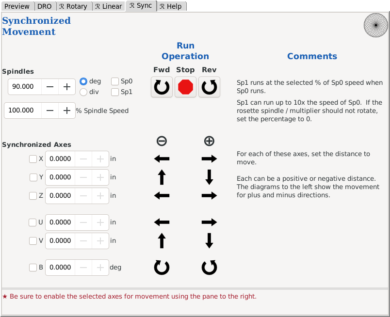

Synchronized Movement
This menu screen is used to synchronize movement between the spindles:
- Main spindle (Sp0)
- Rosette phaser/multiplier (Sp1)
and one (or more) of the other axes:
- Linear axes:
- X axis
- Y axis
- Z axis
- U axis
- V axis
- Rotary axis:
As noted with the comments on the actual screen, the Rosette Phaser/Multiplier can run up 1,000% (10x) the speed of the spindle.
The Rosette Phaser/Multiplier can also run in the opposite direction from the spindle. This is achieved by:
- Setting the spindle speed to some positive value
- Setting the rosette phaser/multiplier percentage to some negative value
OR
- Setting the spindle speed to some negative value
- Setting the rosette phaser/multiplier percentage to some positive value
Notes:
- The distance the axis is moved reflects the settings for the axis in the configuration. For example, if it is set so that 4 revolutions of the linear slide moves it 1°, then each revolution will show 0.250° of movement.
If your device should have this set to 3 revolutions per 1°, you will need to make a change to the SCALE and STEP_SCALE parameters in the respective axis file found in the directory.
Each axis can be set differently.
Directions for updating the axis file.